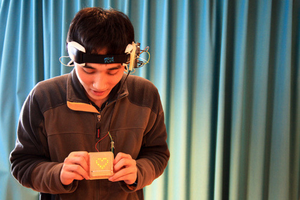

Today’s session was the last one before wrapping up the Asia Module the next day, and we had Dentsu to thank for hosting us. Stepping into the headquarter of Japan’s largest ad agency was pretty staggering sight. Looking at how Dentsu Tower dwarf the surrounding buildings from the outside was one thing (see photo on the left above), but it wasn’t until I stepped inside it that I finally grasped the enormity of the company size. Hosting 5000+ employee into a single dwelling was definitely not a small feat.
Now then, I live in China, a country of superlatives, and this means I should no longer be awed by any tower anymore… after all we have hundreds of those in Shanghai alone; still this was pretty impressive. We were then whisked upward through its fast capsule elevator, and for a brief second I honestly wish to see something like a mothership of some sort. Anything that would closely resemblance the illustration above once we stepped out of the lift…
–
To pick up where I left off on previous note about Necomimi… after series of cool demo by Dentsu Kaoru Sugano, I was pretty psyched about the cute gadget and couldn’t wait to get my hands on it. And through serendipity and sheer luck, I managed to get one as a present from my new friends from Dentsu. These series of photos below demonstrate the fun we had when trying out Necomimi. The sensor were pretty responsive even though I wasn’t sure what kind of metric the gadget use to track brain activity. I would love to see some more information on this, especially since the device didn’t always work on everyone – despite numerous reset. I couldn’t help but wonder on why the gadget failed in this case. Was it due to lack of brain activity? Because if so, then maybe just maybe we could use Necomimi to identify Zombie amongst us, which of course key to survival in post-apocalptic zombie world :-)
Biometric tracking, in fact isn’t new. Video game companies have use similar method for play-testing their games in the past three to five years. The sensor were usually attached using similar method like Necomimi (sans ears), which then tracked player’s heartbeat and brainwave during gameplay. With biometric sensor, we can track several things at once and gather some valuable feedback on players’ attention and engagement in every level of gameplay. On top of that, the sensor would also able to pick up data on which particular scene that player attention started to waver, which game mechanic they enjoyed the most, what kind of challenge were most enjoyable and so on.
Similar DIY prototype was done by one fellow hacker from Shanghai HackerSpace last year and was showcase for the first time at BarCamp Shanghai 2012.

Principally it has similar mechanic to Necomimi except that this DIY prototype tracks not only your brainwave but also heartbeat at the same time then animate the result via some heart-shape LED sensors. The more focus you are, the more solid heart you get. And the dotted LED lights will blink according to your heartbeat rate, faster as you become more engaged and slower as you slowly lose focus. Pretty geeky, huh?
–
Following the Otaku session soon afterward was the introduction to Japanese pop culture creation from the ground up, literally.
The buzz around AKB48, a 92-member girl band, was just insane. At the risk of committing social suicide, I had to admit that I went to their concert back in 2010 at Tokyo Dome. And no, I was not a fan. In fact I had no idea who they were at the time. I simply went as a standup for a friend who couldn’t make it to the show (no really!). And there I was smacked in the middle of thousands teenage girls and boys as well as – this part is rather disturbing – loads of middle age men… all joyously screaming the lyric of Sakura no Hanabiratachi.
The universe might be laughing at this point as I tried to forget about this particular act of temporary insanity to the far back corner of my mind. Alas, here I am reliving the experience by watching some videos of AKB48 concerts during my MBA class.
What I found interesting was the kind of rag-to-riches story that started AKB48. Okay, perhaps that was not quite the right analogy since clearly the pop group was formed with heavy commercialism in mind. Nevertheless the idea of giving ordinary girls a shot at fame is pretty appealing. The voting system itself is pretty egalitarian, meaning that every fans will have a say to pick the group member. While other pop groups were carefully picked, auditioned and trained before launching their debut, AKB48 is a pop-stars process in the making.
This, in my humble opinion, is iteration at its best. Many would disagree with my viewpoint, but if you think for a moment… As a fan, would you not want to have a say in the progress and dynamic of your favorite bands? Fan access and participation are definitely key to AKB48 success in engaging the masses and use it to their advantage. Forget about shallow social media connection, this is the real thing. Fans could vote only if they buy CD (does anyone still buy CD these days?), meet and greet, plus… get this, having the chance to perform or appear in their music videos. Okay, which fans will not be sold on this?
Remember that we’re talking to young audiences here, more specifically teenagers. They wanted different things. In their mind, this is the epitome of self-identification. Yes, it might be shallow. Yes, it is disturbing to see slightly older men cheering on them. Yes, this is exploitation at its crudest. Yes, the line between sexy and cute are blurred here. The list go on. But these objections would, I’m sure, fell on deaf ears to millions of their fans. And to top the scale, due to sheer popularity of AKB48, similar sister groups started to mushrooms in Nagoya, Jakarta (JKT48), SDN48 (spin off of AKB formed by its former member), and widely received in their respective home base.
On top of that, because of AKB voting system, any ordinary girls from any part of Japan could potentially have a chance to be ‘someone’. Never mind if that someone is nothing as inspiring as being a rocket scientist, but still it’s something. I may not agree on this view on personal level, but for most teenagers who aspires to be a pop star the opportunity is few and far between. And to most, such aspiration usually end up merely as pipe dream. That is until AKB48 came along and completely change the game.
It is interesting to see the reaction on AKB48 phenomenon from western perspective. Almost unanimously some of us perceived AKB48 simply as exploitation of teenage girls as sex symbol that disturbingly caters to the masses of older men. Although one has to be very daft not to notice the school girl uniform, I had to nod in agreement in this case. For one thing, I could never understand where Japanese draw the line between cute and sexy. But if this cute/sexy approach seems to yield enormous success not only in Japan but also worldwide, then allow me to tease by throwing this question,“which one should be judged more, the one who created AKB48 or those who actually endorse them?” Food for thought!
However, set aside the socio-morality topic… if we could focus on the fact that this is merely a shallow pop culture creation and money making machine, then I’d say AKB48 business model and its value proposition clearly worked wonder. Granted their hits won’t win any western award anytime soon but if one really listen to their song, their lyrics were anything but shallow. Some were actually carried pretty dark theme which actually went against their cute girlie looks of AKB singers. If that’s not enough contradiction at its most extreme, I don’t know what is. I’m sure, one way or another, they’d wise up and outgrow their AKB-ism, but until then let them have their ticket to fame. Even for a little while…